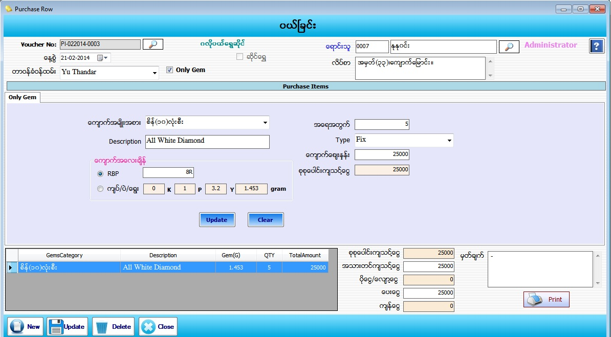

Purchase Raw For Gems Setup
PurchaseRaw
PurchaseRaw(GoldShop)
PurchaseRaw(Gems)

- Purchase Raw Material Item တြင္ Purchase Gem အတြက္ျဖစ္ပါက Only Gem check box တြင္ အမွန္ျခစ္ျခစ္ေပးပါက Only Gem Form ေပၚလာပါလိမ့္မည္။
- Voucher No သည္ software မွ Auto တပ္ေပးပါမည္။
- ေန႕စြဲတြင္ လက္ရွိေရာက္ေနေသာ Date ကိုျပေပးမည္ ျဖစ္သည္။
- တာဝန္ခံ ဝန္ထမ္းကို ေရြးခ်ယ္ပါ။ ေရာင္းသူ၏ code နံပါတ္ကိုအလြတ္သိပါကရိုက္ထည့္လွ်င္ ေရာင္းသူအမည္ႏွင့္ လိပ္စာက်လာပါမည္။နံပါတ္ကိုအလြတ္မသိရွိပါကေရာင္းသူေဘးတြင္ရွိေသာမွန္ဘီ လူးကိုႏွိပ္ၿပီး ေရြးခ်ယ္ရပါမည္။
- ေက်ာက္အမ်ိဳးအစား၊ Description၊ အေရအတြက္၊ Type၊ ေက်ာက္ေစ်းႏွဳန္း၊ စုစုေပါင္းက်သင့္ေငြ ႏွင့္ ေက်ာက္အေလးခ်ိန္တြင္ RBP ႏွင့္ က်ပ္၊ပဲ၊ေရြး ႀကိဳက္ႏွစ္သက္ရာေရြးခ်ယ္ ျဖည့္စြက္ပါ။ ထုိ႕ေနာက္ Add Buttonႏွိပ္ျပီး Dataမ်ားျဖည္႕သြင္းေပးရမည္။
- Add လုပ္ျပီးသား ပစၥည္းတစ္ခုအားျပန္လည္ျပင္ဆင္လုိပါက ေအာက္မွ Grid မွ မိမိျပင္ဆင္လုိေသာ Row ၏ ေရွ႕ဆံုးကိုနွိပ္ပါက သက္ဆိုင္ရာ Row ၏ Data မ်ားကို အေပၚတြင္ျပန္လည္ ျပင္ဆင္နုိင္မည္ ျဖစ္သည္။ျပီးေနာက္ Update Button အားနွိပ္ပါ။
- အသားတင္က်သင့္ေငြ၊ ေပးေငြ၊ မွတ္ခ်က္ တြင္ ျဖည့္စြက္ပါ။ စုစုေပါင္းက်သင့္ေငြ၊ ပိုေငြ-ေလွ်ာ့ေငြ၊ က်န္ေငြ တို႕တြင္ Software မွ Auto က်ေပးမည္ ျဖစ္သည္။
- Data မ်ားျဖည့္စြက္ျပီးပါက Save Button ကိုႏွိပ္၍ သိမ္းဆည္းႏိုင္ပါသည္။ Purchase Invoice Voucher ထုတ္လိုလွ်င္ Print Button ကိုႏွိပ္၍ Voucher ထုတ္ႏုိင္ပါသည္။
- သိမ္းဆည္းၿပီးသား Data မ်ားအား ၿပန္လည္ၾကည့္ၿခင္း၊ ၿပင္ဆင္ၿခင္းမ်ားၿပဳလုပ္ခ်င္ပါက Voucher No ၏ ေဘးတြင္ ရွိေသာ မွန္ဘီလူး button ကိုႏိွပ္ၿပီးၿပန္လည္ၾကည့္ရွဳၿပင္ဆင္ခ်င္ေသာ Purchase Item အား ေရြးခ်ယ္ ၿပီးၿပင္ႏိုင္ ပါသည္။
- သိမ္းဆည္းၿပီးသား ထည့္ျပီးသား Data မ်ားကို ဖ်က္လိုလွ်င္ မွန္ဘီလူး button အားႏိွပ္ၿပီးရွာပါ။ ထို႕ေနာက္ မိမိဖ်က္္လိုေသာ Data ကို Delete Button ကိုႏွိပ္၍ ဖ်က္ႏိုင္ပါသည္။
- Purchase Itemအသစ္ထည္႕လိုပါက New Button ကိုႏွိပ္ျပီး အသစ္ထည့္ႏိုင္ပါသည္။
- Purchase Raw Material Item Form အား အသံုးျပဳျပီးပါက Close Button ကိုႏွိပ္၍ ပိတ္ႏိုင္ပါသည္။